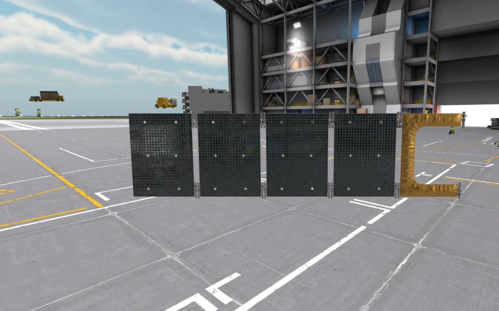
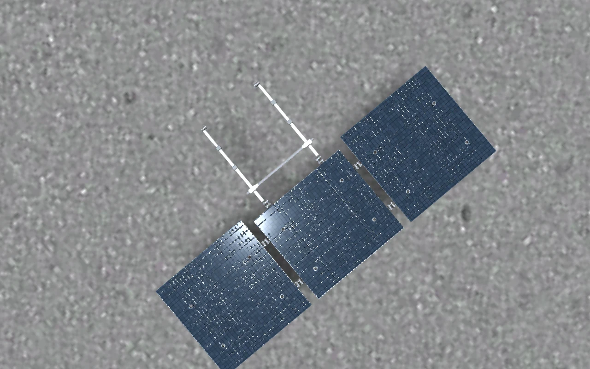
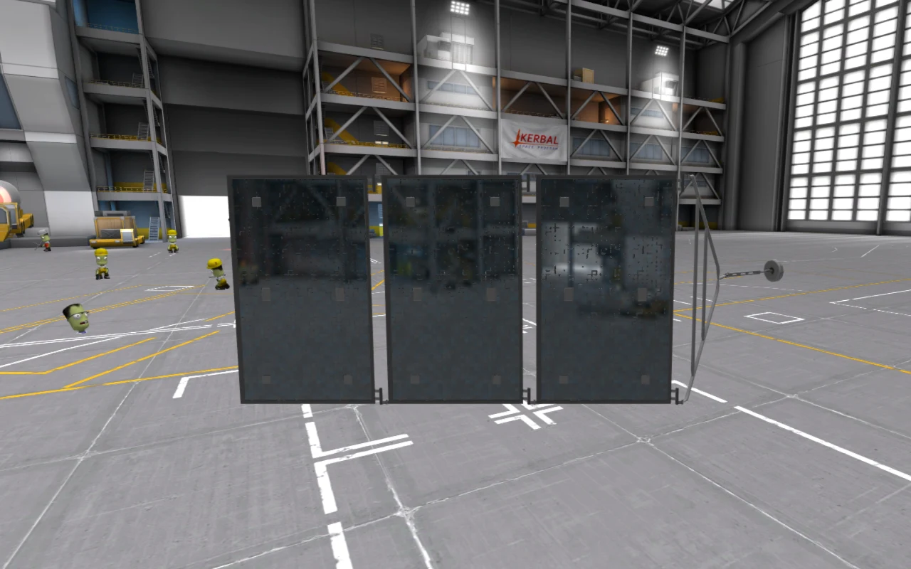
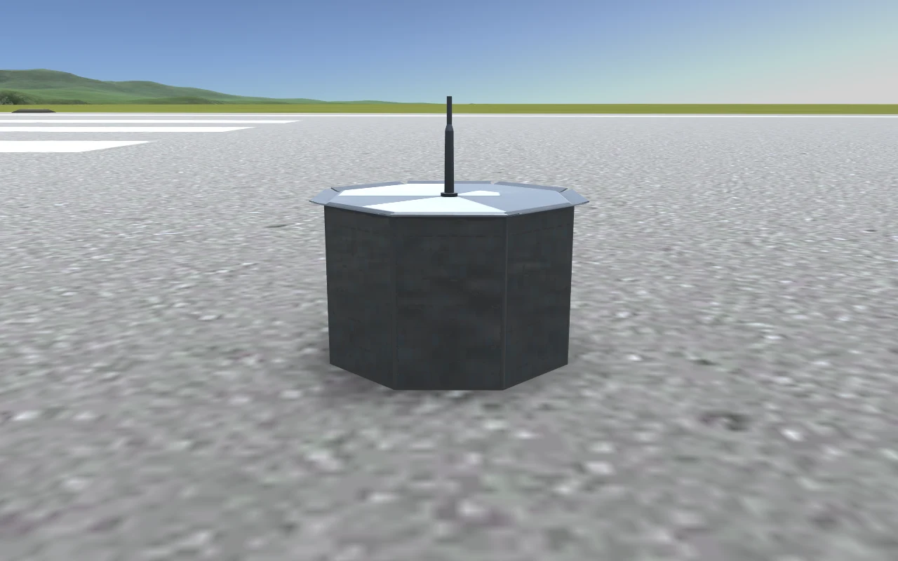
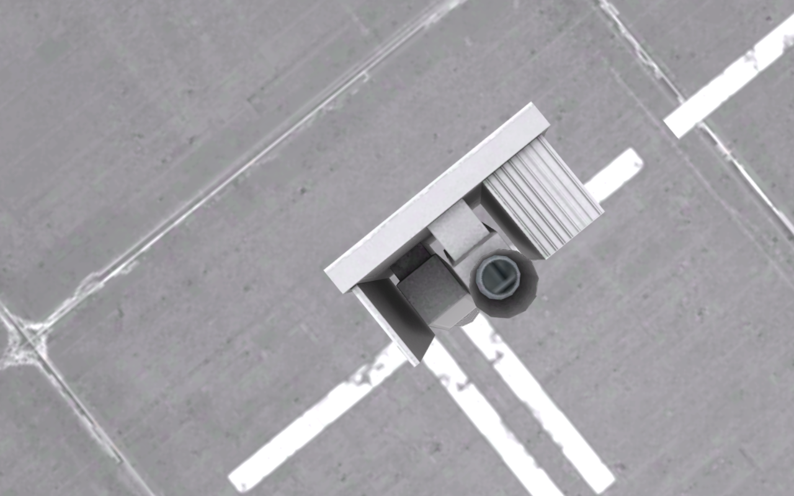
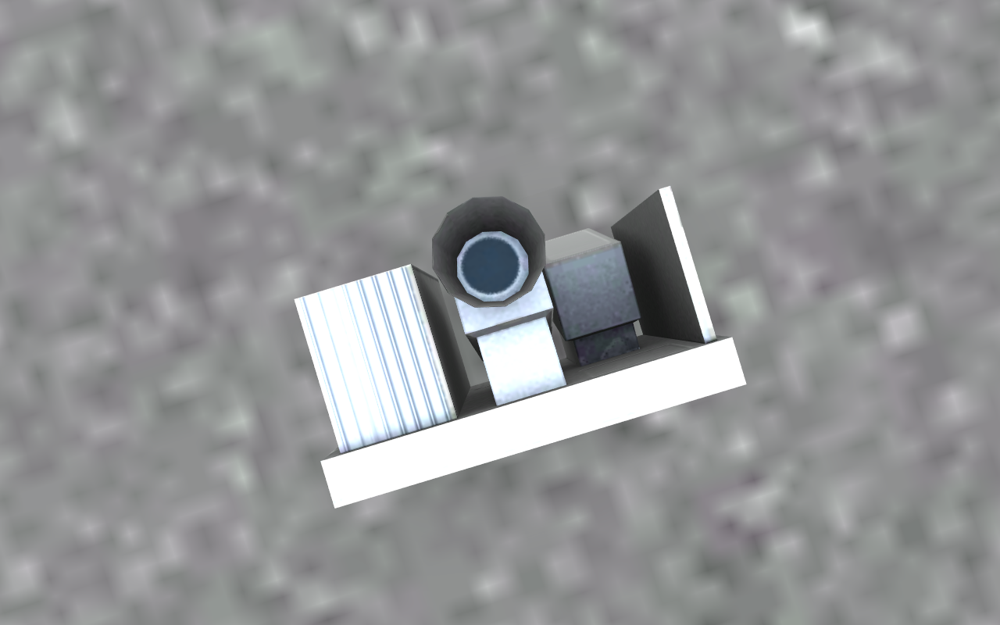

ShineFix home
← Back to supported mods
Diamond Aerospace Exploration Agency (DAXA)
Optics verified
Human tested
Version v0.6.0
Compatibility evidence
Original screenshot gallery
Approved retake evidence
Parts
Hakuchō Solar Wing

Konchū 3x1 Fixed Solar Array

Tsuki Extendible Solar Array

Tsuki Extendible Straight Solar Array
Tsuki OXNA-1/2 Subsatellite

Tsuki Video Camera

